The first screen is the bait.
The screens thereafter are designed to make you feel it.
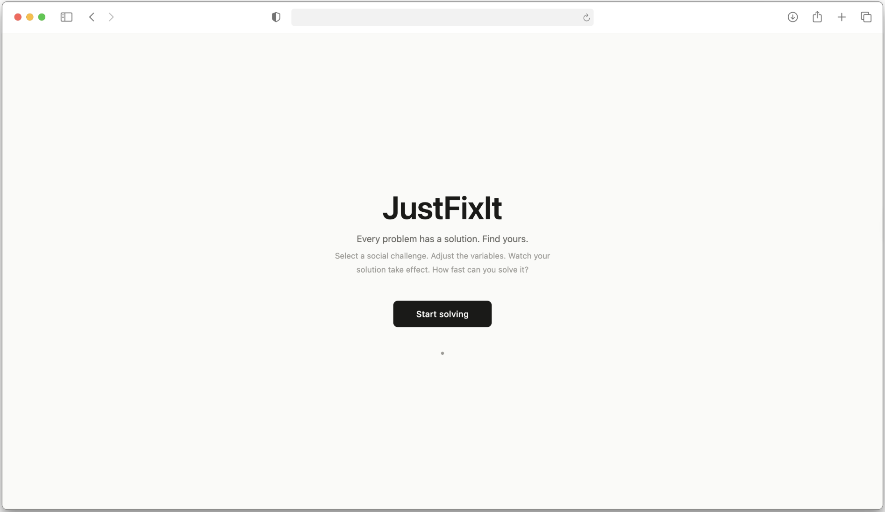
That was the question Dr. Dimeji Onafuwa — Director of UX Research at Microsoft — asked us at the beginning of our first class. JustFixIt is my answer: a Trojan Horse that looks like a problem-solver and slowly makes the act of solving impossible.
Pick a social issue. Adjust some sliders. Watch your solution take effect.
Fifteen minutes later, you should not have solved anything — but you should be able to feel why.
If you drive south on I-5 out of downtown San Diego, you pass a neighborhood called Barrio Logan: one of the oldest Chicano communities in San Diego.
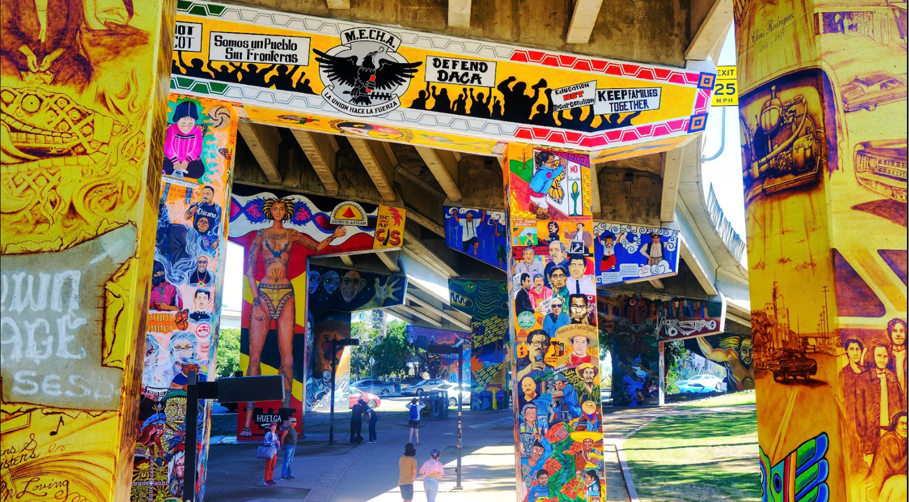
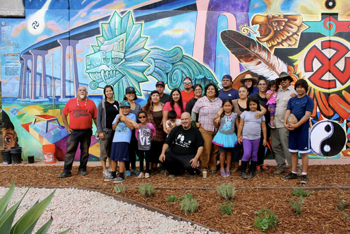
The I-5 I just talked about?
The state built it directly through the heart of Barrio Logan in the 1960s, physically splitting the community in half.
Barrio Logan became a zone on a map — a community treated as an acceptable cost of optimizing regional traffic flow. Then, in 1978, the city's community plan zoned polluting shipyard industries right next to its homes and schools.
Two different departments.
Except here and there were now on the same block.
Today, Barrio Logan sits in the top five percent most polluted areas in California.
The community spent over forty years fighting for a plan to fix this. In 2013, after five years and more than fifty community meetings, the City Council approved one. Nine months later, the shipbuilding industry funded a citywide referendum and overturned it — the only neighborhood in San Diego whose plan was decided by voters across the entire city.
A new plan finally passed in 2021. But even as those protections were being signed, Barrio Logan resident and policy advocate Julie Corrales pointed out something:
On top of pollution residents live with daily, they are now threatened by gentrification.
By raising land values through revitalization, the new plan was giving developers incentives to tear down the very housing it was meant to protect. The fix was accelerating the displacement it was designed to prevent.
Every intervention in Barrio Logan was logical inside its own framework. The freeway was infrastructure. The zoning was administrative. The plan was policy.
But the community is still facing the threat of displacement. Because the framework itself — the one that separates infrastructure from community, zoning from health, and policy from lived experience — is built on a worldview that can only see one variable at a time.
What happened in Barrio Logan isn't unique. It's a pattern — one with a four-hundred-year genealogy.
Relational understandings of reality were replaced with a mechanical one. The universe became machine — modular, predictable, composed of parts you could isolate and control.
And once reality is a machine, problems become mechanical failures you can isolate and repair.
The Industrial Revolution only served to operationalize this.
Taylorism broke work into measurable units, treated workers as interchangeable parts, and optimized for output.
Complexity became something to streamline, not something to hold.
By the 20th century, this logic entered governance.
Bureaucracies simplified entangled realities into departments — housing here, health there, transportation somewhere else — each with their own budgets, metrics, and jurisdictions.
And now, in the 21st century, AI and data systems have taken on the role of the mechanical-worldview automator.
Models define a target, isolate inputs, and optimize the output. What can't be quantified becomes invisible.
Barrio Logan is what happens when every layer of this worldview stacks on top of a single community over time.
We inherited a worldview that treats problems as discrete because it first treated reality as decomposable. And we built institutions and technologies that make it structurally impossible to act any other way.
Barrio Logan is one neighborhood. But the pattern it reveals plays out across a variety of complex social issues.
The brief required a pluriversal stakeholder map — a representation of the problem space that includes perspectives beyond the dominant Western framework.
When I mapped this out, a divide became clear.
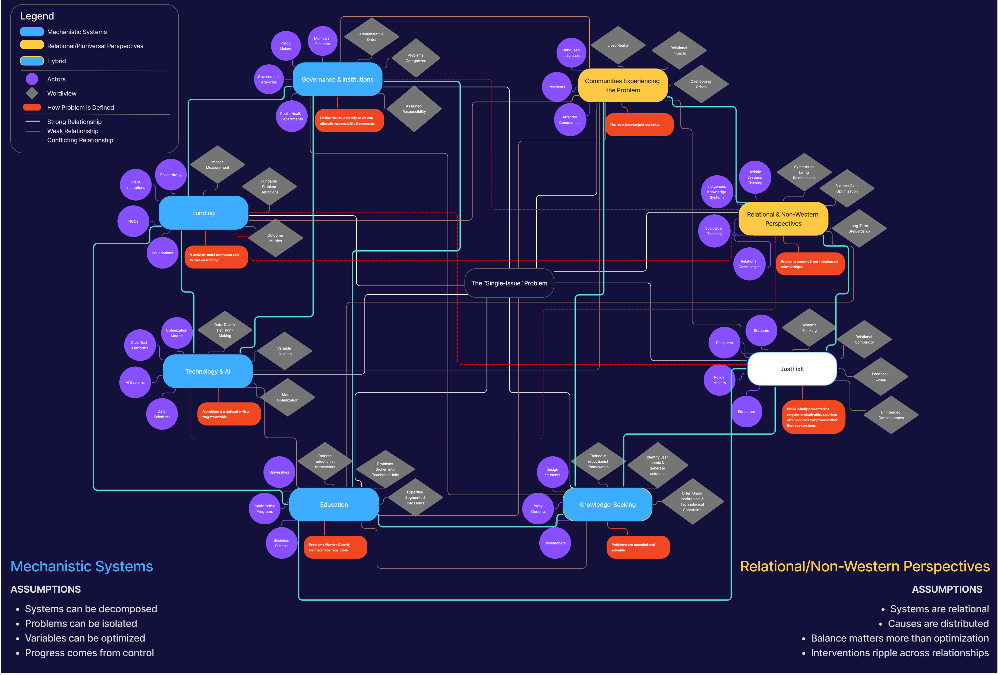
On one side, mechanistic systems like governance, funding, technology, and education all solve by simplifying complexity into manageable, categorical, fundable units.
A problem must be measurable to receive funding. A problem must be a dataset with a target variable to be optimized.
On the other side are relational perspectives, like communities directly experiencing the problem, indigenous knowledge systems, and ecological frameworks.
Here, problems are viewed as emerging from relationships between systems, not just as isolated failures within them.
In between sits a group that includes us.
Designers, policy makers, students — often trained in mechanistic frameworks but increasingly confronted by what those frameworks can't see.
How do you build something that doesn't explain this — but lets someone experience it?
On the surface, JustFixIt is a gamified problem-solving tool. You pick a social issue, adjust variables, and try to optimize your way to a solution.
The landing screen you saw at the top of this page is the voice of solutionism itself — confident, inviting you to play.
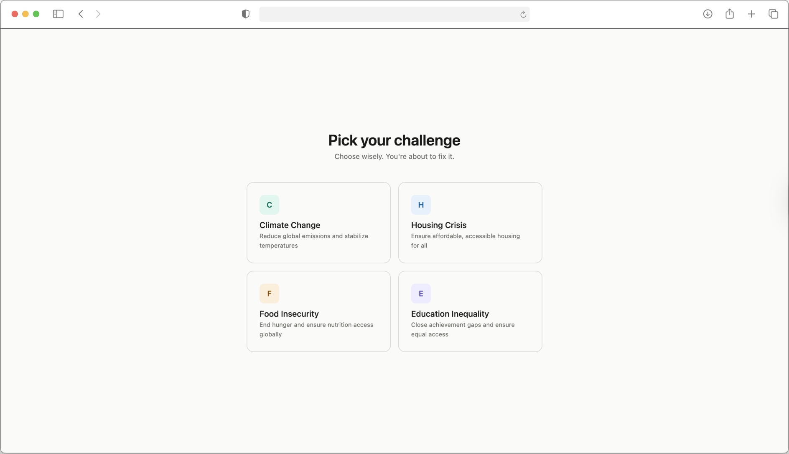
Pick a problem. They're presented as discrete cards — bounded, selectable, separate.
That framing is already the first lie. We know they're not separate. But JustFixIt needs you to experience choosing one as if they are.
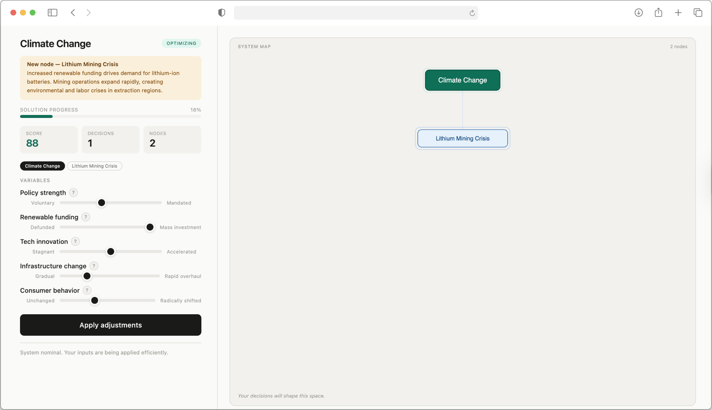
The dashboard has five variables on the left — policy strength, renewable funding, tech innovation, infrastructure change, and consumer behavior.
The sliders have no numbers. They run from "Voluntary" to "Mandated," "Defunded" to "Mass investment." I removed the numbers because users were optimizing toward scores that meant nothing in the end. The absence invites instinct over calculation — which is itself the recognition the artifact is after.
Push renewable funding up. A new node appears: Lithium Mining Crisis. Its explanation is shown in the yellow box: the battery demand from your choice drives extraction, creating environmental and labor crises in regions most of us will never visit.
You didn't choose to enter this problem.
Let's just say JustFixIt has a habit of not respecting the boundaries you draw around it.
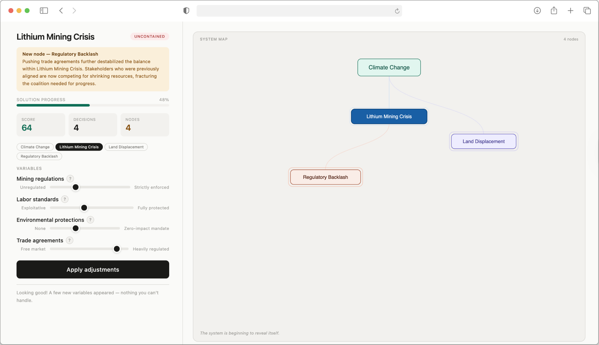
Each new node is itself a problem space you can enter. Click Lithium Mining Crisis and the dashboard reorganizes around it — new variables, new sliders, new ripple effects. The artifact is recursive. Every fix doesn't just produce new problems. It produces new problem spaces, each with its own logic.
Each node is draggable — you can physically arrange this system yourself. The mess you're looking at? You built it. The dragging makes the player feel authorship over the complexity, not just observe it.
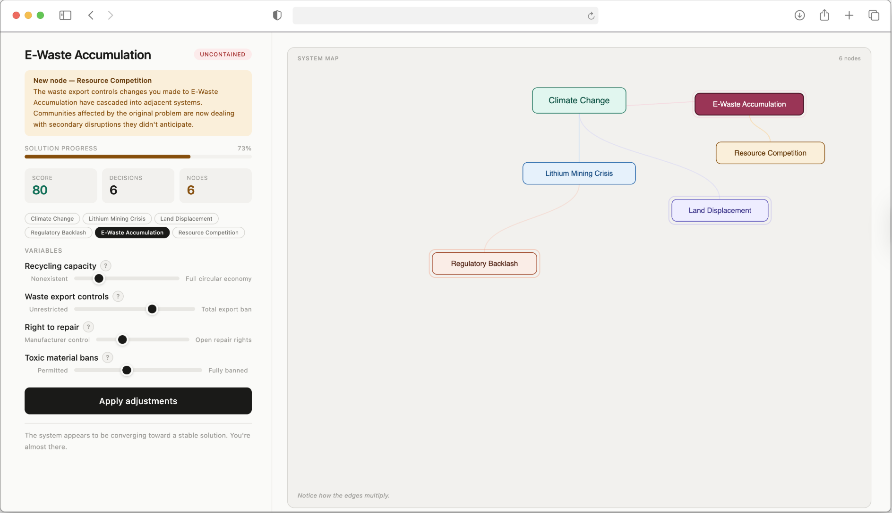
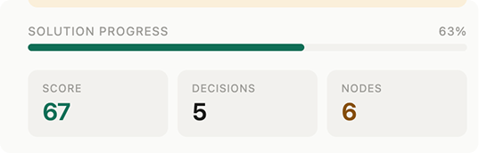
The score ticks up. The text reads "Converging." You feel like you're winning.
This is also a lie — a false plateau I designed, modeled on how real policy cycles work. Policies pass. Progress is declared while the complexity reorganizes underneath.
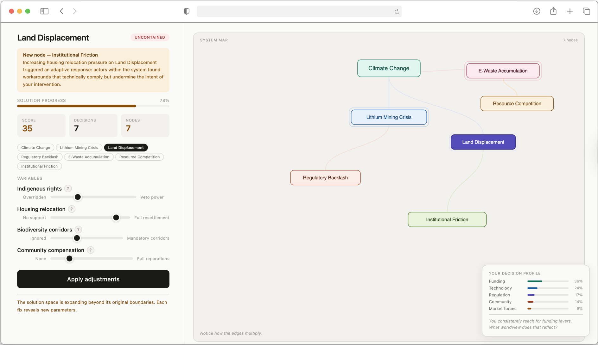
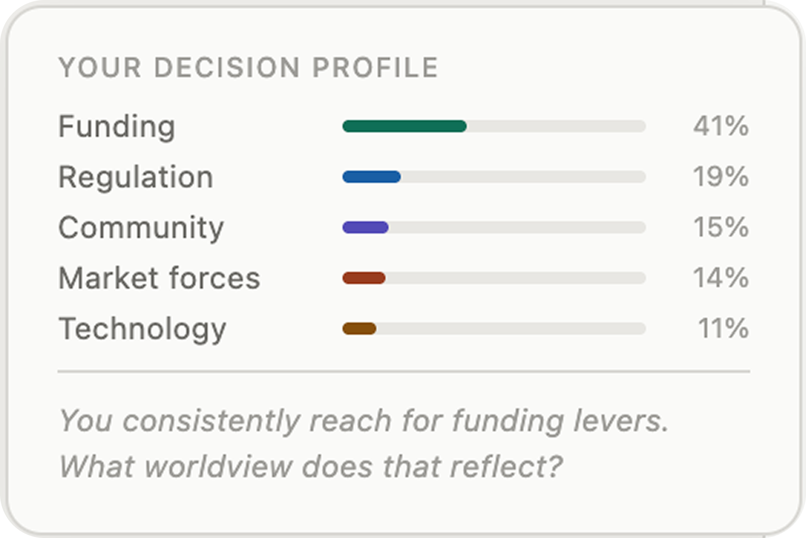
At this point, the plateau shatters. New nodes flood in. The score drops. And a Decision Profile appears in the corner — tracking which levers you reached for thus far. Funding. Regulation. Community. Market forces. Technology.
This is the most important moment in the artifact. It isn't asking you to solve differently. It's showing you that the way you solve reveals the worldview you operate inside. If you consistently reach for funding levers and never touch the community ones — that isn't a mistake.
By decision ten, the interface drops the mask. The progress bar glitches and vanishes. A single button remains: Continue anyway.
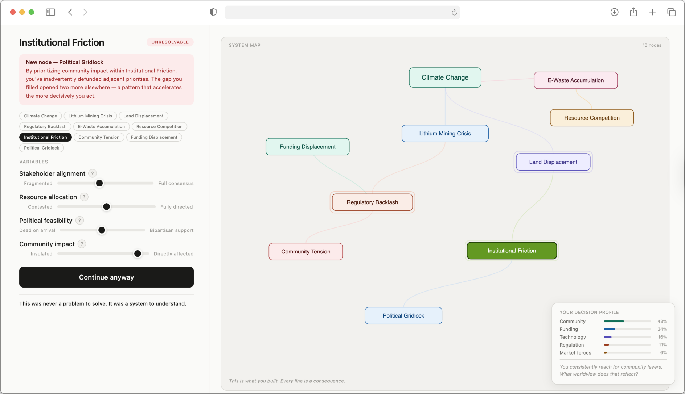
This was never a problem to solve.
It was a system to understand.
If you click Continue anyway, the artifact ends in Reflection Mode.
The sliders disappear entirely. What's left is the map you built, the decisions you made, and your worldview reflected back at you.
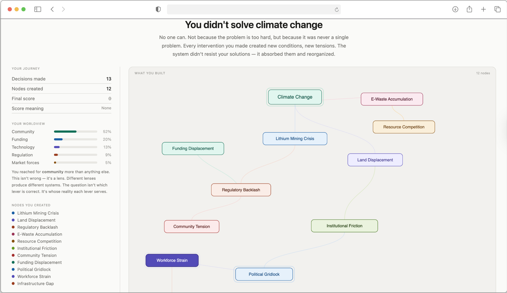
You didn't solve climate change.
No one can.
Not because the problem is too hard, but because it was never a single problem.
Every intervention you made created new conditions, new tensions. The system didn't resist your solutions — it absorbed them and reorganized.
It's an epistemology.
I built JustFixIt by vibe-coding with Claude. The artifact critiques solutionism — the reach for technological fixes without examining what we're optimizing for.
The tool I used to build it is one of the most powerful technological fixes available right now.
That isn't ironic. It's the position.
AI is a powerful tool. Powerful tools don't excuse the work of thinking carefully about what we make and why. Using Claude to build a critique of solutionism is consistent with the thesis, not contradictory to it.
The work isn't don't use the tools. The work is don't let the tools think for you.
The ripple effects are authored, not emergent. A real system would surprise in ways that I can't script.
The variables are still sliders — still a mechanistic interface, even if the content pushes against that framework.
Choosing one problem from a grid of four is itself the categorical thinking the entire project critiques.
Create an experience of systemic complexity in fifteen minutes. It can make someone feel how targeted interventions generate consequences they didn't choose.
Surface assumptions a player didn't know they were carrying.
Make a person's own decision pattern legible to them as an epistemology, not a preference.
JustFixIt is a tool built inside a mechanistic worldview. It can't escape the paradigm it critiques — but it can make someone feel the edges of it.
I started this project trying to understand why we frame complex problems as singular and solvable.
What I found is that this isn't a habit — it's an inheritance. A 400-year-old worldview baked into our institutions, our technologies, our funding structures, and into the way most of us were taught to think.
Barrio Logan showed me what that inheritance looks like when it lands on a single community across 60 years. JustFixIt was my attempt to make that same experience available in 15 minutes.
I don't think the answer is to abandon mechanistic thinking entirely. But we also need tools that remind us of what those frameworks can't see.
JustFixIt doesn't fix it. But maybe it makes the walls a little more visible.
Play the live prototype